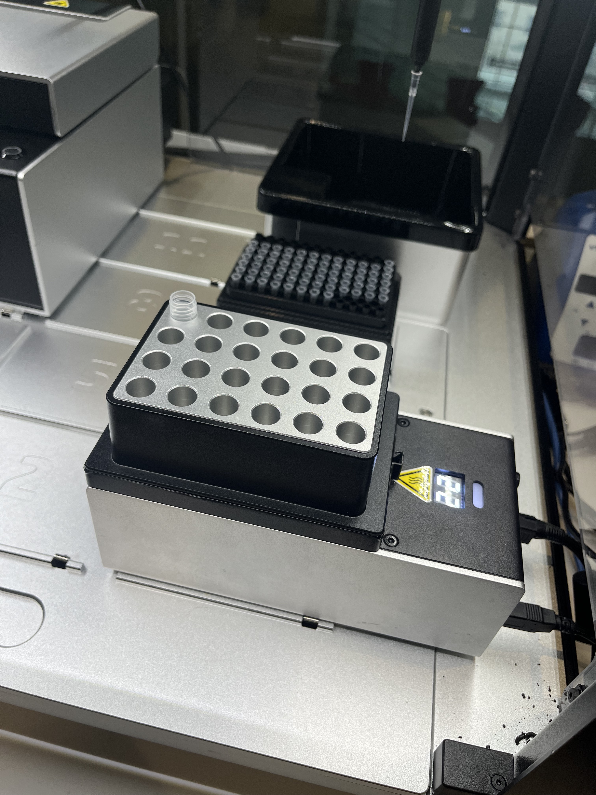
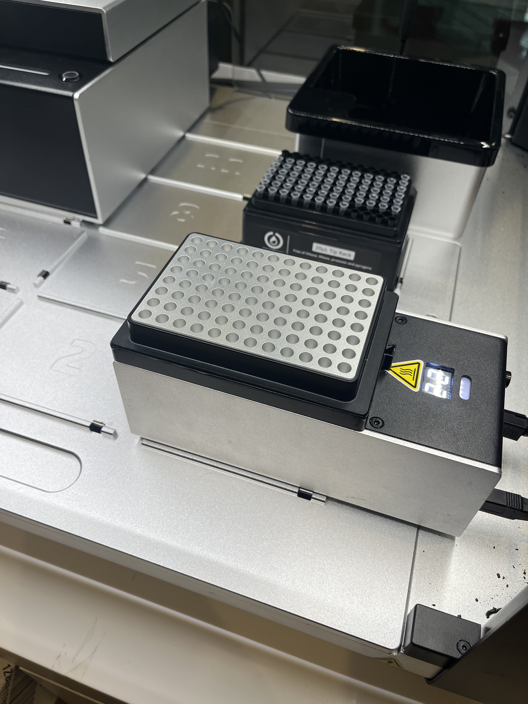
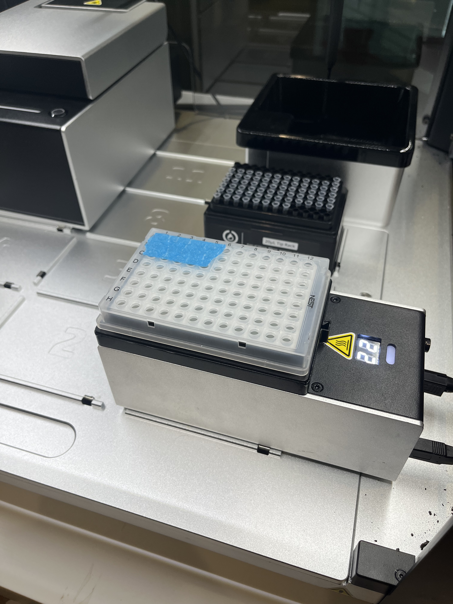
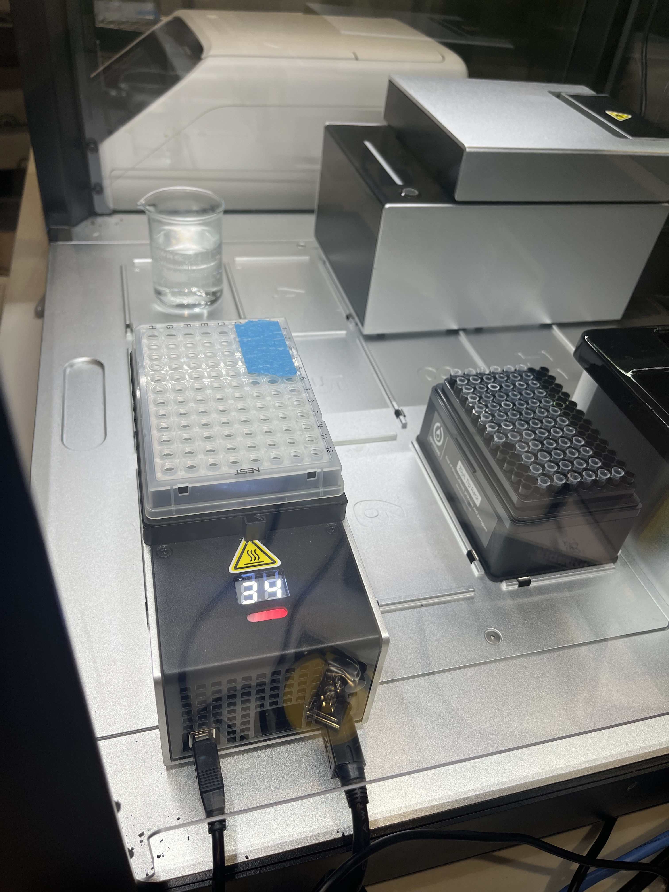
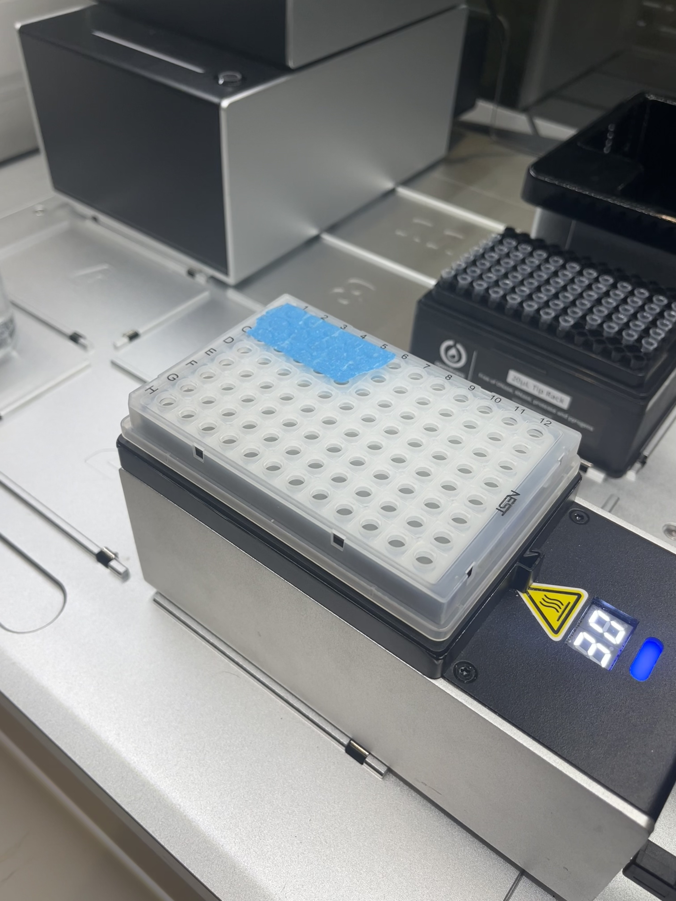

I’ve been working to better integrate the Temperature Model from Opentrons into PyLabRobot. The temperature module sits on the deck of the Opentrons and can keep reagents at temperatures between 4°C and 95°C. The module has aluminum block adapters that allow you to place put 96-well plates on it or add tubes like between 1.5-2mL on a 4x6 tube rack.
An example of using the Temperature Module
Our integration of the Opentrons temperature controller into PyLabRobot allows you to add arbitrary resources the module and set a temperature for the base plate. Below is a basic example of taking water from a beaker, adding it to a 2mL screwcap in the first well of the 24-well aluminum block from Opentrons.
  
Figure 1: From left to right a) the 24-well aluminum block holding a 2mL tube, b) the 96-well aluminum block, c) the 96-well aluminum block with a 96-well 0.1mL PCR plate.
from pylabrobot.liquid_handling import LiquidHandler
from pylabrobot.liquid_handling.backends import OpentronsBackend
from pylabrobot.resources import OTDeck, Coordinate
backend = OpentronsBackend(host="xxx.xxx.xxx.xxx", port=31950)
lh = LiquidHandler(backend=backend, deck=OTDeck())
await lh.setup()In order to load the temperature module, we need to get the module ID. We can see this by doing
# Make sure to turn on the modules, otherwise they won't appear
>>> await backend.list_connected_modules()
[{'id': 'xxx',
'serialNumber': 'yyy,
'firmwareVersion': 'v2.1.0',
'hardwareRevision': 'temp_deck_v21',
'hasAvailableUpdate': False,
'moduleType': 'temperatureModuleType',
'moduleModel': 'temperatureModuleV2',
'data': {'status': 'idle', 'currentTemperature': 22.0},
'usbPort': {'port': 1,
'portGroup': 'main',
'hub': False,
'path': '1.0/tty/ttyACM0/dev'}}]Here is a simple function to get the module ID.
async def get_temperature_module_id():
modules = await backend.list_connected_modules()
module_id = next((module['id'] for module in modules if module['moduleModel'] == 'temperatureModuleV2'), None)
return module_id
tc_module_id = await get_temperature_module_id()Now, we instantiate the temperature module with the module ID, and add the aluminum block resource.
from pylabrobot.temperature_controlling.opentrons import OpentronsTemperatureModuleV2
from pylabrobot.resources.opentrons.tube_racks import opentrons_24_aluminumblock_generic_2ml_screwcap
plate = opentrons_24_aluminumblock_generic_2ml_screwcap('24_aluminumblock_generic_2ml_screwcap')
tc = OpentronsTemperatureModuleV2(name="tc", opentrons_id=tc_module_id, child=plate)
await tc.setup()
lh.deck.assign_child_at_slot(tc, slot=3)At any time, we can get the current temperature (degC) of module using
>>> await tc.get_temperature()
22.0We can transfer liquids onto the child resource of the temperature module like any other well plate or tube rack. Let’s first define a water beaker on the deck and some tips.
from pylabrobot.resources import Container, Coordinate
from pylabrobot.resources.opentrons import *
water_deck_slot = Container(name="water_deck_parent", size_x=127,size_y=86,size_z=0)
water_beaker = Container(name='water_beaker', size_x=40,size_y=40,size_z=10)
water_deck_slot.assign_child_resource(water_beaker, Coordinate(x=43.5, y=23, z=0))
lh.deck.assign_child_at_slot(water_deck_slot, slot=1)
tips20 = opentrons_96_tiprack_20ul("tip_rack_20")
lh.deck.assign_child_at_slot(tips20, slot=9)Here is what the deck looks like when we run lh.summary().
Deck: 624.3mm x 565.2mm
+-----------------+-----------------+-----------------+
| | | |
| 10: Empty | 11: Empty | 12: trash_co... |
| | | |
+-----------------+-----------------+-----------------+
| | | |
| 7: Empty | 8: Empty | 9: tip_rack... |
| | | |
+-----------------+-----------------+-----------------+
| | | |
| 4: Empty | 5: Empty | 6: Empty |
| | | |
+-----------------+-----------------+-----------------+
| | | |
| 1: water_de... | 2: Empty | 3: tc |
| | | |
+-----------------+-----------------+-----------------+Now, we can pick up a tip, aspirate from the water beaker, and dispense into a 2mL tube which I added to the aluminum block on the temperature module.
await lh.pick_up_tips(tips20["B11"], offsets=[Coordinate(z=-6)])
await lh.aspirate(water_beaker, 20, offsets=[Coordinate(z=25)])
await lh.dispense(plate["A1"], vols=20)
await lh.discard_tips()Success! To set the temperature of the module, we can use:
await tc.set_temperature(37)After setting the temperature, we can use wait_for_temperature() to pause our workflow until the target temperature is reached. Note that you need to first have set a target temperature!
await tc.wait_for_temperature()Depending on whether you set the temperature below or above the current temperature, the module will display a red light (heating) or a blue light (cooling).
 
Figure 2: Left, the module is heating. Right, the module is cooling. Pretty neat.
Improvements to the Temperature Module integration
Rick W. already wrote a basic implementation of the temperature model (docs). However there were a few improvements to make.
First, I brought a centimeter tape measure to get better measurements of the temperature controller. In the original implementation, the height was measured to the top of one of the aluminum adapters. We updated it to be just the height of the temperature module itself, setting us up to be able to put any child resource on top.
Second, the existing implementation was not flexible to having multiple aluminum block adapters and always specified a single tube rack on the temperature module with roughly measured dimensions. We fixed this by allowing you to instantiate the temperature module class OpentronsTemperatureModuleV2 with any child resource, including tube racks and well plates from the library pylabrobot.resources.opentrons.
class OpentronsTemperatureModuleV2(TemperatureController):
""" Opentrons temperature module v2.
https://opentrons.com/products/modules/temperature/
https://shop.opentrons.com/aluminum-block-set/
"""
def __init__(self, name: str, opentrons_id: str, child: Optional[ItemizedResource] = None):
super().__init__(
name=name,
size_x=193.5,
size_y=89.2,
model="opentrons_temperature_module_v2"
)
self.backend = OpentronsTemperatureModuleBackend(opentrons_id=opentrons_id)
self.child = child
if child is not None:
self.assign_child_resource(child, location=Coordinate(x=0, y=0, z=0))I added additional resources to pylabrobot.resources.opentrons that you can put on the temperature controller like the 24-well aluminum tube rack. I did this by loading them directly from the Opentrons shared labware definitions on Github. This is in general a much better strategy for getting precise labware measurements than trying to measure them yourself.
def opentrons_24_aluminumblock_generic_2ml_screwcap(name: str) -> TubeRack:
return cast(TubeRack, load_shared_opentrons_resource(
definition="opentrons_24_aluminumblock_generic_2ml_screwcap",
name=name,
version=2
))Here, load_shared_opentrons_resource (link) is a function that calls ot_definition_to_resource which converts an Opentrons definition file to a PyLabRobot resource file, programmatically defining the resource, including any well dimensions, from a JSON file. The JSON file (example) from Opentrons defines the dimensions of the resource and wells within it (note: Opentron calls everything wells, including pipette tips in their tip racks), the volume of wells, among other things.
{
"ordering": [
["A1", "B1", "C1", "D1"],
["A2", "B2", "C2", "D2"],
["A3", "B3", "C3", "D3"],
["A4", "B4", "C4", "D4"],
["A5", "B5", "C5", "D5"],
["A6", "B6", "C6", "D6"]
],
"schemaVersion": 2,
"version": 2,
"namespace": "opentrons",
"metadata": {
"displayName": "Opentrons 24 Well Aluminum Block with Generic 2 mL Screwcap",
"displayVolumeUnits": "mL",
"displayCategory": "aluminumBlock",
"tags": []
},
"dimensions": {
"xDimension": 127.75,
"yDimension": 85.5,
"zDimension": 48.7
},
...
"wells": {
"D1": {
"shape": "circular",
"depth": 42,
"diameter": 8.5,
"totalLiquidVolume": 2000,
"x": 20.75,
"y": 16.88,
"z": 6.7
},
"C1": {
"shape": "circular",
"depth": 42,
"diameter": 8.5,
"totalLiquidVolume": 2000,
"x": 20.75,
"y": 34.13,
"z": 6.7
},
...Finally, we fixed a bug that was cropping up do to a recent update to the Opentrons API which changed how resources should be defined on the deck of an Opentron. Previously, all resources were defined to slots on the deck, but in the newer implementation, resources can be defined to modules themselves or “areas” on the deck. Without getting into the details, we fixed this by making a more general ot_location variable that could handle different types of location assignments.